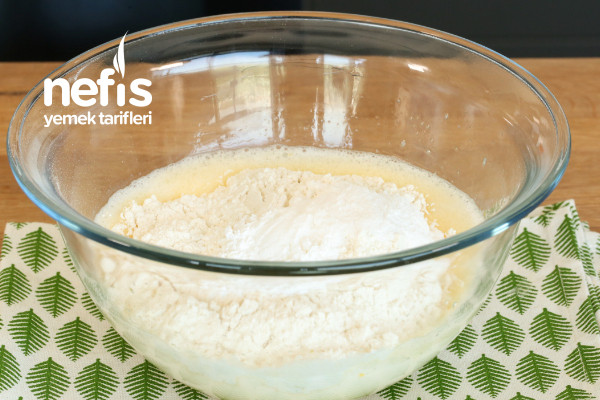
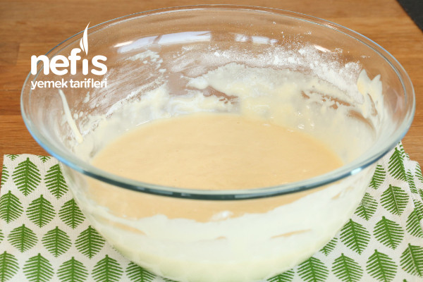
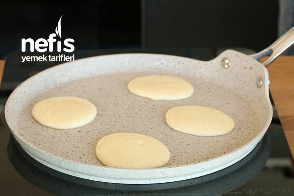
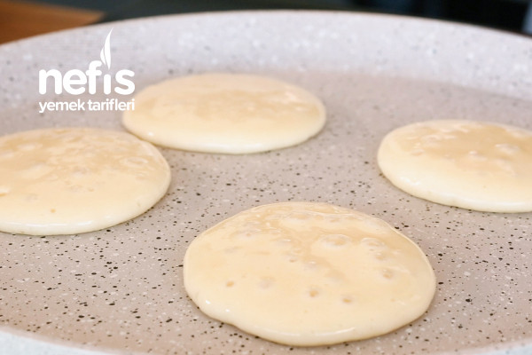
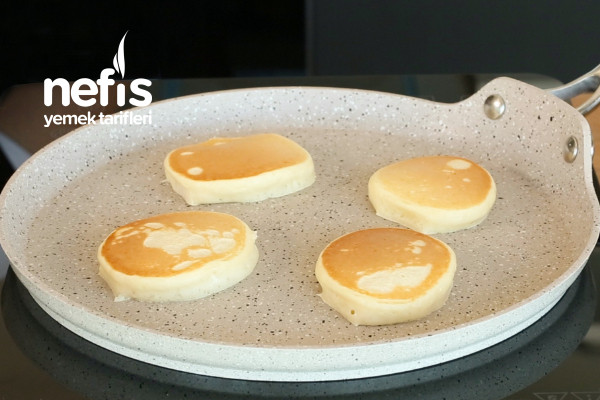

Afiyet olsun.
Not: bu ölçüler ile 18-20 adet pankek elde ettim. Kahvaltılarda veya canınız tatlı istediğinizde bu pankek tarifini mutlaka denemenizi tavsiye ederim, bir defa deneyin, zaten sürekli yapacağınıza eminim :)
|  | Yumurtalar ve şekeri uygun bir karıştırma kabına alarak iyice çırpalım. |
|  | Süt, un, kabartma tozu, vanilya ilave çırpma teli ile çırpalım. Siz dilerseniz mikser ile de çırpabilirsiniz. Kek kıvamından biraz daha koyu olacak şekilde hamur hazırlayalım. |
|  | Teflon ya da yapışmaz bir tavaya az sıvı yağı dökelim, fırça yardımı ile her tarafına dağıtalım. Sıvı yağı az kullanmak pankek yapmanın püf noktalarındandır. Dilerseniz peçete ile de tavaya dağıtabilirsiniz. |
|  | 1 büyük kaşık hamur dökülerek hamurun kendi kendine yayılmasını bekleyelim. |
|  | Üzeri göz göz olmaya başlayan pankeklerimizi spatula yardımı ile ters çevirelim. Diğer taraflarını da pişirelim. |
|
|
Her iki tarafı da pişen pankeklerimizi servis tabağına alalım. Üzerine pudra şekeri serpilerek zevkinize göre muz, kivi, çilek, çikolata, bal, sürülebilir çikolata, reçel ile servis edebilirsiniz. |